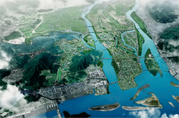

港湾物流産業
- Home
- 戦略産業
- 港湾物流産業
概要
釜山は世界と未来をつなぐ北東アジア時代の海洋首都、国際秩序の創造をリードする都市を目指す中、世界的な港湾と最先端物流団地を中心とする港湾物流インフラの整備に力を注いでいます。
-

国際産業物流都市の造成
-
 加徳島新空港
加徳島新空港 -
釜山新港
育成産業
釜山新港のグローバル競争力強化
釜山港新港の建設
- 2020年までに江西区加徳島一帯に 45バース規模のコンテナ埠頭建設
- 新港航路中心の浚渫及び土島除去(2010年～2017年)
- 油類中継基地及び大型修理造船所を含めた釜山新港背後物流団地の造成(1995年～2020年)
- ワンストップ共同物流センターの造成
- 24時間運営可能な韓国第2の玄関口、新空港を加徳島に建設
釜山新港の背後に国際産業物流都市造成
世界的な先端産業物流団地を造成
- 江西地域33㎢の敷地に2020年までに国際複合物流、先端産業団地、R&D団地を建設
- 地方産業団地、エコデルタシティ親水区域、研究開発特区、航空クラスター、一般産業団地を段階別に育成
ユーラシア大陸の玄関口、北港の再開発
釜山港北港の再開発
- 釜山港沿岸埠頭から第4埠頭にかけての一帯153万㎢を2020年までに複合都市機能を備えた世界的な美港に再創造
- 港湾・レジャー・商業施設を兼ね備えた海洋観光・ビジネスの拠点
- 釜山駅一帯の鉄道施設を再配置(2013年～2023年)
- 海洋経済特別区域試験地区に指定、関連産業間の融複合を誘導
海洋創造経済の実現
海洋水産公共機関革新クラスターの造成
- 公共機関及び関連機関の移転により、東三革新地区に海洋水産関連機関を集積化
- 北極研究センターなどの極地進出に向けた基盤とネットワークの構築
- 海洋バイオ産業団地と海洋スーパーコンピューティング専門センターの設立による海洋創造産業R&D育成基盤の構築
グローバル水産食品クラスターの造成
観光資源と連携して世界的な海洋水産複合空間を造成
- 釜山共同魚市場の現代化(2015年～2018年)
- チャガルチ市場のグローバル水産名所化(2013年～2018年)
- 水産食品産業クラスター(Sea Food Valley)ヘッドタワー造成(2015年～2020年)
- 農林畜産検疫検査本部嶺南地域本部検疫係留場の移転(2010年～2016年)